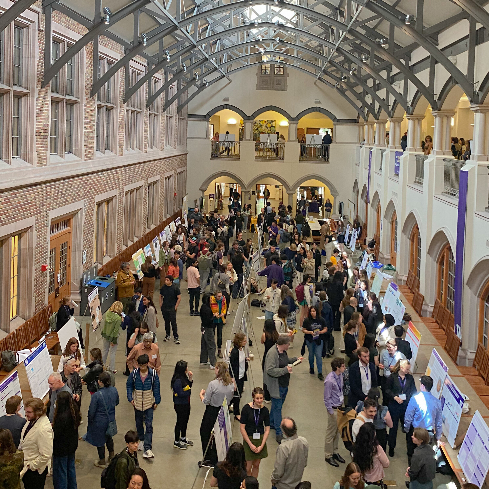

Overview
Researcher |
BioMedizone |
Apr 2024 - Present 4 months
•Wrote comprehensive articles on chosen topics, ensuring clarity and accuracy in adherence to journal’s standards
Notetaker |
Bellevue College |
Sep 2023 - Present 11 months
•Attended classes and took notes digitally and physically on calculus course materials
Podcast Department Member |
EvoSol Pediatrics |
Mar 2024 - Jun 2024 4 months
•Assisted team in developing a podcast about pediatric health
College/High School Intern |
STEMPOWERed |
Aug 2023 - Nov 2023 4 months
• Directed content creation interns to uphold guidelines of cross-platform content integration as Head of Content Creation
Medical Product Analysis Intern |
AV Beauty & Healthy |
Jun 2023 - Sep 2023 4 months
• Attended K-Med Expo Vietnam 2023 to learn about upcoming Korean medical & biotech products and innovations
Tutor |
Seattle Public Schools |
Jun 2022 - Jul 2022 2 months
• Encouraged a growth mindset by tracking progress, adapting teaching methods, and proctoring tests to promote student integrity